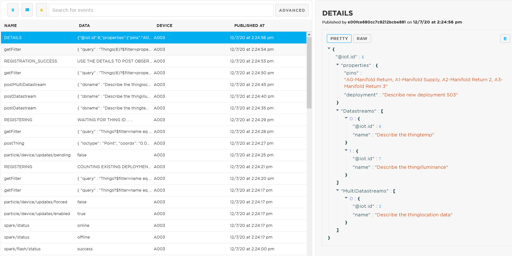

Masa3DB with Particle Devices¶
Pre-requisite¶
If you are unfamilar with Particles. Please go through these tutorials to familiarise yourself with the service.
Configure the 8 webhooks in your particle account shown in Particle Webhooks.
Claiming Particle Devices¶
If it doesn’t work. Doing a factory reset on the device can help with the registration. Once reset, try step (1) again.
1) Begin holding the MODE button down. 2) While holding the MODE button down, tap the RESET button briefly. 3) After 3 seconds the core will begin blinking yellow, KEEP HOLDING the MODE button. 4) After 10 seconds the core will begin blinking white. When this happens the factory reset process has begun. Let go of the MODE button.
Particle Scripts¶
6 scripts are written for particle device to work with Sensorthings API. Copy and paste these 6 links onto your browser and login to your particle account.
STAPI01_isDeviceRegistered:
https://go.particle.io/shared_apps/5fd26ea3483a480009a35286
STAPI02_RegisterDevice:
https://go.particle.io/shared_apps/5fd25f28e6f0b000172d5076
STAPI03_RegisterNewDeployment:
https://go.particle.io/shared_apps/5fd260a7e6f0b000092d5d29
STAPI04_RegisterSensor:
https://go.particle.io/shared_apps/5fd2625b483a480009a3520f
STAPI05_RegisterObservedProp:
https://go.particle.io/shared_apps/5fd26322483a480009a35216
STAPI06_PostObservations:
https://go.particle.io/shared_apps/5fd269b0483a480017a34ddb
Check if the device is registered in the database by flashing it with STAPI01_isDeviceRegistered.

Fig. 16 If the device is not registered you will be asked to register it with STAPI02-RegisterDevice script under the event name ‘NOT_REGISTERED’.¶

Fig. 17 If the device is registered you will be able to see its details under the event name ‘REGISTRATION_DETAILS’.¶
Register the device with STAPI02_RegisterDevice. Fill in the details accordingly. Pay attention to the instructions written in the script to fill in the parameters.

Fig. 18 Fill in all the necessary parameters before flashing the script.¶

Fig. 19 Details of the registration is published under the event name ‘DETAILS’. Take not of the multi/datastreams id as you will need these ids for the STAPI06_PostObservations scripts.¶

Fig. 20 If this device is already registered, you will be informed duplicates are found and the duplicate id on the database under the event name ‘INSTRUCTION’.¶
a. If the sensor you are using for the deployment is not registered in the database. Use script STAPI04_RegisterSensor to register the new sensor. Fill in the parameters accordingly and pay attention to the instruction given on the script. One sensor only has to be registered once and it can be used again. Just remember the id of the sensor.
Fig. 21 Details of the registration is published under the event name ‘REGISTRATION_DETAILS’. Pay attention to the sensor @iot.id, you will need this id for the STAPI02_RegisterDevice script.¶
b. If the Observed Property you are using for the deployment is not registered in the database. Use script STAPI05_RegisterObservedProp to register the new property. Fill in the parameters accordingly and pay attention to the instruction given on the script. One property only has to be registered once and it can be used again. Just remember the id of the property.
Fig. 22 Details of the registration is published under the event name ‘REGISTRATION_DETAILS’. Pay attention to the property @iot.id, you will need this id for the STAPI02_RegisterDevice script.¶
If you are re-purposing the device. Use STAPI03_RegisterNewDeployment to register the same device in the database but with a different deployment parameter. Fill in the parameters, pay attention to the instruction on the script.
Fig. 23 Details of the the registration is published under the event name ‘DETAILS’. Take not of the multi/datastreams id as you will need these ids for the STAPI06_PostObservations scripts.¶

Fig. 24 If this device is already registered, you will be informed duplicates are found and the duplicate id on the database under the event name ‘INSTRUCTION’.¶
With the multi/datastream ids use STAPI06_PostObservations to post your observations to the database. The script is only a template, make necessary adjustments to the script for your project.

Fig. 25 Observations are posted to the database.¶
{kind=link}